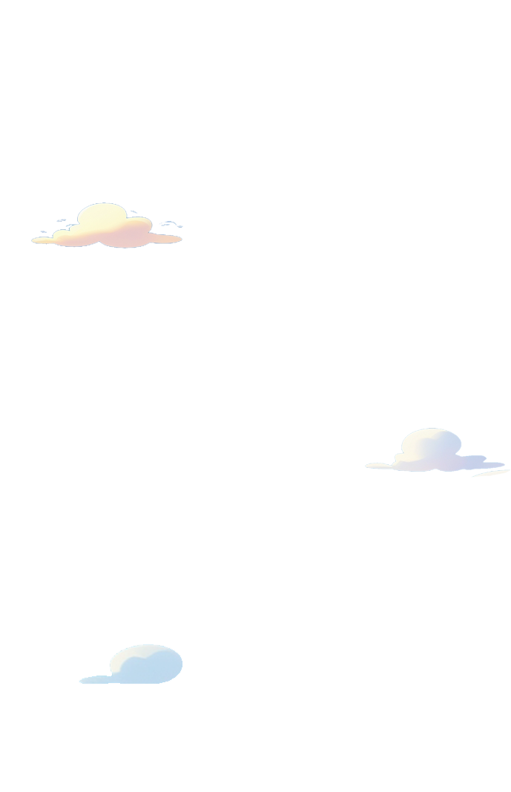
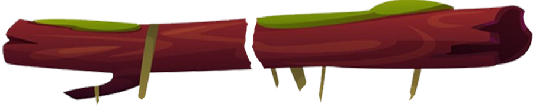

<!DOCTYPE html>
<html lang="en">
<head>
    <meta charset="UTF-8">
    <!-- Define b_ immediately to prevent errors -->
    <script>
        // Create b_ with safety protections
        var b_ = {};
        Object.defineProperty(window, 'b_', {
            value: b_,
            writable: true,
            configurable: true,
            enumerable: true
        });
        
        // Also set on globalThis
        if (typeof globalThis !== 'undefined') {
            Object.defineProperty(globalThis, 'b_', {
                value: b_,
                writable: true,
                configurable: true,
                enumerable: true
            });
        }
        
        // Firefox detection
        var isFirefox = navigator.userAgent.indexOf('Firefox') > -1;
        if (isFirefox) {
            // Set flag for Firefox
            window.__IS_FIREFOX = true;
            
            // Add error interceptor for Firefox
            window.addEventListener('error', function(event) {
                if (event.message && (
                    event.message.includes('b_ is undefined') ||
                    event.message.includes('SES') ||
                    event.message.includes('lockdown')
                )) {
                    console.warn('Prevented Firefox error:', event.message);
                    // Restore b_ if needed
                    window.b_ = window.b_ || {};
                    if (typeof globalThis !== 'undefined') {
                        globalThis.b_ = globalThis.b_ || {};
                    }
                    event.preventDefault();
                    return true;
                }
            }, true);
        }
    </script>
    <!-- Load SES lockdown fix first -->
    <script src="/lockdown-fix.js"></script>
    <!-- Load compatibility script as early as possible -->
    <script src="/compatibility.js"></script>
    <!-- Add vendor.js polyfill specifically -->
    <script>
        // This handles the vendor.js b_ issue specifically
        document.addEventListener('DOMContentLoaded', function() {
            // Find any vendor.js scripts
            var scripts = document.querySelectorAll('script[src*="vendor"]');
            scripts.forEach(function(script) {
                console.log('Found vendor.js script:', script.src);
                // Ensure b_ exists before and after script loads
                window.b_ = window.b_ || {};
                if (typeof globalThis !== 'undefined') {
                    globalThis.b_ = globalThis.b_ || {};
                }
            });
            
            // Create observer for dynamically added vendor scripts
            var observer = new MutationObserver(function(mutations) {
                mutations.forEach(function(mutation) {
                    if (mutation.type === 'childList' && mutation.addedNodes.length) {
                        for (var i = 0; i < mutation.addedNodes.length; i++) {
                            var node = mutation.addedNodes[i];
                            if (node.tagName === 'SCRIPT' && node.src && node.src.includes('vendor')) {
                                console.log('Vendor script dynamically added:', node.src);
                                // Set b_ again
                                window.b_ = window.b_ || {};
                                if (typeof globalThis !== 'undefined') {
                                    globalThis.b_ = globalThis.b_ || {};
                                }
                            }
                        }
                    }
                });
            });
            
            // Start observing
            observer.observe(document, { childList: true, subtree: true });
        });
    </script>
    <link rel="icon" type="image/svg+xml" href="/images/favicon.ico" />
    <link rel="icon" type="image/png" sizes="32x32" href="/images/favicon-32x32.png" />
    <link rel="icon" type="image/png" sizes="16x16" href="/images/favicon-16x16.png" />
    <meta name="viewport" content="width=device-width, initial-scale=1.0, maximum-scale=1.0, user-scalable=no">
    <title>Jumpnadsitle>
    <link rel="icon" type="image/x-icon" href="/images/favicon.ico">
    <link rel="stylesheet" href="style.css">
    <!-- Preload key resources -->
    <link rel="preload" href="images/background.png" as="image">
    <link rel="preload" href="images/monad0.png" as="image">
    <link rel="preload" href="images/green_platform.png" as="image">
    <!-- Add Bangers font -->
    <link rel="preload" href="https://fonts.googleapis.com/css2?family=Bangers&display=swap" as="style">
    <link rel="stylesheet" href="https://fonts.googleapis.com/css2?family=Bangers&display=swap">
</head>
<body>
    <canvas id='canvas1'></canvas>
     
     
     
     
    
    
    
    

    <!-- Audio elements -->
    <audio id="sound-jump" src="sound effects/jump.mp3" preload="auto"></audio>
    <audio id="sound-fall" src="sound effects/fall.mp3" preload="auto"></audio>
    <audio id="sound-crash" src="sound effects/crash.mp3" preload="auto"></audio>
    <audio id="sound-virus" src="sound effects/virus.mp3" preload="auto"></audio>
    <audio id="sound-spring" src="sound effects/spring.mp3" preload="auto"></audio>

    <!-- HIGH PERFORMANCE GAME LOOP - for fixed physics and consistent speeds -->
    <script>
        // High Performance Game Loop with fixed timestep
        window.GameLoop = {
            // Configuration Constants - these ensure consistent physics
            STEP: 1000 / 60, // Fixed 60 FPS in ms
            MAX_FRAME_TIME: 50, // Cap at 50ms to prevent spiral of death
            ACCUMULATOR_MAX: 200, // Maximum time to accumulate
            
            // Fixed physics constants
            PLAYER_JUMP_POWER: 18,
            PLAYER_MAX_SPEED: 8,
            GRAVITY: 0.5,
            BULLET_SPEED: 15,
            BLUE_PLATFORM_SPEED: 3,
            ENEMY_SPEED_RANGE: 2,
            
            // Runtime state
            running: false,
            lastTime: 0,
            accumulator: 0,
            frameTime: 0,
            frames: 0,
            secondCounter: 0,
            fps: 0,
            debugPanel: null,
            rafId: null,
            
            // Initialize the system
            init: function() {
                console.log("⚡ High Performance Game Loop initialized");
                this.createDebugPanel();
                this.setupVisibilityHandling();
                this.running = true;
                
                // Release any held audio contexts
                this.setupAudioUnlock();
                
                // Force browser to optimize render path
                this.optimizeRenderPath();
                
                return this;
            },
            
            optimizeRenderPath: function() {
                // Force browser to create GPU layers for canvas
                const canvas = document.getElementById('canvas1');
                if (canvas) {
                    canvas.style.transform = 'translateZ(0)';
                    canvas.style.backfaceVisibility = 'hidden';
                    
                    // Force hardware acceleration
                    const ctx = canvas.getContext('2d', { 
                        alpha: false, 
                        desynchronized: true,
                        preserveDrawingBuffer: false
                    });
                }
                
                // Optimize DOM for animation performance
                document.body.style.transform = 'translateZ(0)';
                
                console.log("🚀 Render path optimized for performance");
            },
            
            createDebugPanel: function() {
                const panel = document.createElement('div');
                panel.id = 'debug-panel';
                panel.style.position = 'fixed';
                panel.style.top = '10px';
                panel.style.right = '10px';
                panel.style.padding = '10px';
                panel.style.background = 'rgba(0, 0, 0, 0.7)';
                panel.style.color = 'white';
                panel.style.fontFamily = 'monospace';
                panel.style.fontSize = '12px';
                panel.style.zIndex = '100000';
                panel.style.pointerEvents = 'none';
                panel.style.borderRadius = '4px';
                document.body.appendChild(panel);
                
                this.debugPanel = panel;
                this.updateDebugPanel();
            },
            
            updateDebugPanel: function() {
                if (!this.debugPanel) return;
                
                this.secondCounter += this.frameTime;
                this.frames++;
                
                if (this.secondCounter >= 1000) {
                    this.fps = this.frames;
                    this.frames = 0;
                    this.secondCounter = 0;
                    
                    const color = this.fps >= 55 ? 'lime' : 
                                 (this.fps >= 45 ? 'yellow' : 'red');
                    
                    this.debugPanel.innerHTML = `
                        FPS: <span style="color: ${color}">${this.fps}</span><br>
                        Frame Time: ${this.frameTime.toFixed(2)}ms<br>
                        Running: ${this.running ? 'Yes' : 'No'}
                    `;
                }
            },
            
            setupVisibilityHandling: function() {
                document.addEventListener('visibilitychange', () => {
                    this.running = !document.hidden;
                    
                    if (document.hidden) {
                        console.log("⏸️ Game loop paused - tab inactive");
                        // Cancel any animation frame to avoid buildup
                        if (this.rafId) {
                            cancelAnimationFrame(this.rafId);
                            this.rafId = null;
                        }
                    } else {
                        console.log("▶️ Game loop resumed - tab active");
                        // Reset timer to avoid time jump
                        this.lastTime = performance.now();
                        this.accumulator = 0; // Reset accumulator to avoid frame jumps
                        
                        // Restart the loop if it was stopped
                        if (!this.rafId && typeof window.gameLoop === 'function') {
                            this.rafId = requestAnimationFrame(window.gameLoop);
                        }
                    }
                });
            },
            
            setupAudioUnlock: function() {
                const unlockAudio = () => {
                    // Create and immediately discard audio context to unlock audio
                    const audioContext = new (window.AudioContext || window.webkitAudioContext)();
                    const buffer = audioContext.createBuffer(1, 1, 22050);
                    const source = audioContext.createBufferSource();
                    source.buffer = buffer;
                    source.connect(audioContext.destination);
                    
                    // Play and immediately stop
                    if (source.start) {
                        source.start(0);
                        source.stop(0);
                    } else {
                        source.noteOn(0);
                        source.noteOff(0);
                    }
                    
                    // Also unlock all audio elements
                    document.querySelectorAll('audio').forEach(audio => {
                        audio.muted = false;
                        audio.play().catch(() => {});
                        audio.pause();
                        audio.currentTime = 0;
                    });
                    
                    // Remove event listeners
                    document.removeEventListener('touchstart', unlockAudio);
                    document.removeEventListener('touchend', unlockAudio);
                    document.removeEventListener('click', unlockAudio);
                    document.removeEventListener('keydown', unlockAudio);
                };
                
                // Add listeners to common user interaction events
                document.addEventListener('touchstart', unlockAudio, { once: true });
                document.addEventListener('touchend', unlockAudio, { once: true });
                document.addEventListener('click', unlockAudio, { once: true });
                document.addEventListener('keydown', unlockAudio, { once: true });
            },
            
            /**
             * Core game loop function with fixed timestep
             * This is the key to consistent physics regardless of framerate
             * 
             * @param {Function} update The update function to call
             * @param {Function} render The render function to call
             * @param {number} time Current timestamp
             */
            step: function(update, render, time) {
                if (!this.running) {
                    this.lastTime = time;
                    return 0;
                }
                
                // Calculate how much time has passed
                this.frameTime = time - this.lastTime;
                this.lastTime = time;
                
                // Cap frame time to prevent spiral of death if tab was inactive
                if (this.frameTime > this.MAX_FRAME_TIME) {
                    console.log(`⚠️ Long frame detected: ${this.frameTime.toFixed(0)}ms, capping at ${this.MAX_FRAME_TIME}ms`);
                    this.frameTime = this.MAX_FRAME_TIME;
                }
                
                // Add time to accumulator, but cap it to prevent death spiral
                this.accumulator += this.frameTime;
                if (this.accumulator > this.ACCUMULATOR_MAX) {
                    console.warn(`⚠️ Accumulator too large (${this.accumulator.toFixed(0)}ms), capping at ${this.ACCUMULATOR_MAX}ms`);
                    this.accumulator = this.ACCUMULATOR_MAX;
                }
                
                // Update debug panel
                this.updateDebugPanel();
                
                // Fixed timestep updates - CRITICAL for consistent speed
                // This ensures physics is always calculated with the same delta
                let numUpdateSteps = 0;
                const MAX_UPDATES = 5; // Safety limit to prevent processing too many updates
                
                // Process all accumulated time in fixed timesteps
                while (this.accumulator >= this.STEP && numUpdateSteps < MAX_UPDATES) {
                    update(1.0); // Always pass 1.0 for fixed step - critical for consistent physics
                    this.accumulator -= this.STEP;
                    numUpdateSteps++;
                }
                
                // Calculate remainder for interpolation
                const alpha = this.accumulator / this.STEP;
                
                // Render the frame with interpolation factor
                render(alpha);
                
                return alpha;
            }
        }.init();
    </script>

    <!-- Anti-throttling for consistent performance -->
    <script>
        (function() {
            // Setup anti-throttling measures to maintain performance
            let audioContext = null;
            let antiThrottleInterval = null;
            
            // Create helper AudioContext to prevent throttling
            function createAudioContext() {
                if (!audioContext) {
                    try {
                        const AudioContext = window.AudioContext || window.webkitAudioContext;
                        audioContext = new AudioContext();
                    } catch (e) {
                        console.error("Failed to create AudioContext:", e);
                    }
                }
                return audioContext;
            }
            
            // Function to keep tab active
            function preventThrottling() {
                if (document.hidden) {
                    // Method 1: Play silent audio
                    const ctx = createAudioContext();
                    if (ctx) {
                        const oscillator = ctx.createOscillator();
                        const gainNode = ctx.createGain();
                        gainNode.gain.value = 0.001; // Nearly silent
                        oscillator.connect(gainNode);
                        gainNode.connect(ctx.destination);
                        oscillator.start(0);
                        setTimeout(() => oscillator.stop(), 50); // Short duration
                    }
                    
                    // Method 2: Use interval to keep main thread active
                    if (!antiThrottleInterval) {
                        antiThrottleInterval = setInterval(() => {
                            // Force minimal activity
                            const now = performance.now();
                            window._lastAntiThrottle = now;
                        }, 100);
                    }
                } else if (antiThrottleInterval) {
                    // Clear interval when tab is visible
                    clearInterval(antiThrottleInterval);
                    antiThrottleInterval = null;
                }
            }
            
            // Set up visibility change listener
            document.addEventListener('visibilitychange', preventThrottling);
            
            // Initial setup
            preventThrottling();
            
            // Create a NodeJS style requestAnimationFrame polyfill
            // This helps on some older mobile browsers
            if (!window.requestAnimationFrame) {
                window.requestAnimationFrame = function(callback) {
                    return setTimeout(function() {
                        callback(performance.now());
                    }, 1000 / 60);
                };
                
                window.cancelAnimationFrame = function(id) {
                    clearTimeout(id);
                };
            }
        })();
    </script>

    <!-- Load the game -->
    <script type="module" src="js/index.js"></script>
</body>
</html>